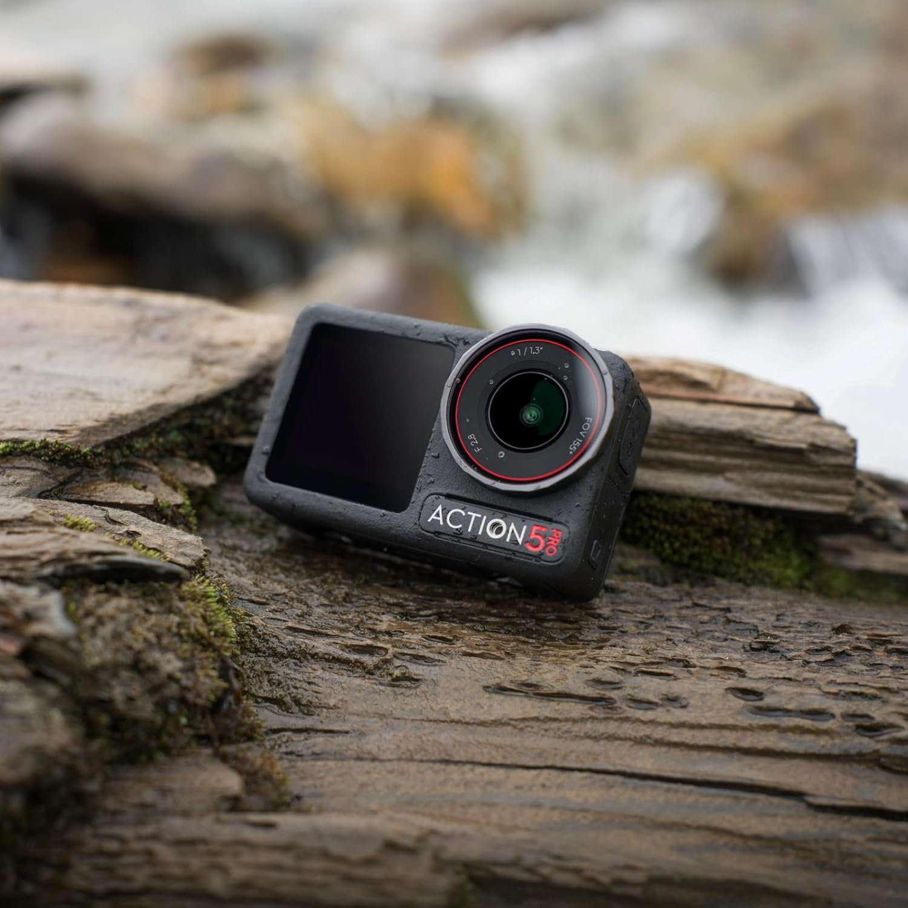

GEAR REVIEW / カメラ
【新ギア導入】DJI Osmo Action 5 Pro｜今後の山行や厳冬期を見据えて選んだ理由と期待

これからの登山や厳冬期の山行、そして将来の挑戦に向けて、新たに撮影の相棒として選んだのが「DJI Osmo Action 5 Pro」です。まだ実際の山には持って行っていませんが、厳しい環境下での撮影に耐えうるスペックに惹かれて購入を決定しました。
主なスペック
| モデル名 | DJI Osmo Action 5 Pro |
|---|---|
| センサー | 1/1.3インチ CMOSセンサー |
| 最大動画解像度 | 4K / 120fps (16:9) |
| 静止画解像度 | 最大 40MP (7296×5472) |
| バッテリー持続時間 | 最大 240分 (4時間) |
| 防水性能 | 水深 20m（ケースなし） |
| 動作環境温度 | -20℃ ～ 45℃ |
| 重量 | 約 146g |
購入を決めた注目ポイント
数あるアクションカメラの中で、なぜこのモデルを選んだのか。登山で使う上で期待しているポイントをまとめました。
期待しているポイント
- 氷点下（-20℃）対応の耐寒性と長寿命バッテリー： 雪山登山ではバッテリーがすぐ切れる課題がありましたが、長時間の撮影が期待できそうです。
- 大型1/1.3インチセンサーでの高画質撮影： 朝焼けや夕暮れ、薄暗い樹林帯などでも美しい映像が残せる点に期待しています。
- 強力な手ブレ補正機能： 登はん中や揺れの激しい歩行時でも、見やすい安定した映像が期待できます。
今後の山行に向けて
まずは次回の山行から実際にネックマウントにセットして、現場での使い勝手や映像のクオリティを試してみる予定です。
実際に山で使い込んできたら、バッテリーの持ちや雪山での使用感など、詳細なフィールドレビューを追記していきたいと思います！